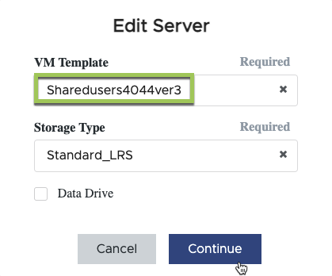

문서 변경 요청
문서 변경 요청 이 페이지 편집
이 페이지 편집 기여하는 방법 자세히 알아보기
기여하는 방법 자세히 알아보기VM 이미지 업데이트 및 배포
애플리케이션 제공 방법론
사용자는 사용자 세션이 실행 중인 SHVM(Session Host Virtual Machine)이 설치된 모든 응용 프로그램에 액세스할 수 있습니다.
사용자는 사용자 그룹의 구성원 자격을 기준으로 SHVM 풀("호스트 풀")에 할당됩니다. 해당 호스트 풀의 모든 SHVM은 동일한 VM 이미지를 기반으로 하며, 동일한 애플리케이션을 가지고 있으며 동일한 VM 리소스에서 실행됩니다. 사용자가 연결할 때마다 현재 사용자 세션 수가 가장 적은 호스트 풀의 SHVM에 할당됩니다.
VDM 관리자는 호스트 풀의 각 SHVM에서 애플리케이션을 추가하거나 제거하여 VDM 사용자가 액세스할 수 있는 애플리케이션을 제어할 수 있습니다.
각 SHVM에서 응용 프로그램을 추가(또는 제거)하는 작업은 각 SHVM에서 직접 수행하거나 단일 VM 이미지로 수행할 수 있으며, 이 이미지는 호스트 풀의 모든 SHVM에 배포될 수 있습니다.
이 문서에서는 VM 이미지 관리에 대해 설명합니다. SHVM에 응용 프로그램을 직접 설치하는 방법은 에서 설명합니다 "이 기사를 참조하십시오".
VM 이미지 업데이트 중
SHVM에 응용 프로그램을 추가(또는 제거)하는 데 권장되는 방법은 호스트 풀에 할당된 VM 이미지를 편집하는 것입니다. VM 이미지를 사용자 지정하고 검증하면 VDM 지원 팀이 요청 시 호스트 풀의 모든 SHVM에 구축할 수 있습니다.
-
VDS 포털의 배포 내에서 "Provisioning Collections(프로비저닝 컬렉션)"를 탐색합니다
-
업데이트할 호스트 풀과 연결된 프로비저닝 컬렉션을 클릭합니다.

-
"서버" 섹션에서 "VM 템플릿" 이름을 기록해 둡니다.


-
-
2.a 단계에서 기록해 둔 VM 템플릿이 소스 템플릿이 되도록 서버 템플릿을 편집합니다 있습니다. "계속"을 클릭합니다.


|
* 다음 설정은 편집하지 마십시오: * 1. 유형 = VDI 2. 공유 드라이브 = 비어 있음 3. 최소 캐시 = 0 4. 데이터 드라이브 = 선택되지 않음 5. 스토리지 유형 = Standard_LRS |
-
이제 VDM 자동화는 Azure에서 임시 VM을 구축하며, 시스템 이름은 _CWT#_가 됩니다. 이 VM을 구축하는 데 25분이 걸릴 수 있습니다. 프로세스가 완료되면 상태가 "보류 중"으로 변경됩니다.
-
이 VM은 사용자 지정 프로세스가 완료될 때까지 실행되므로 1일 또는 2일 이내에 VM을 구축, 사용자 지정 및 검증하는 것이 중요합니다.
-
-
임시 VM이 준비되면 Provisioning Collection을 편집한 다음 서버에서 "Connect"를 클릭하여 VM에 로그온할 수 있습니다.
-
자격 증명을 묻는 메시지가 표시되면 VDM 관리자가 "PAM Approver" 권한을 사용하여 도메인 관리자 자격 증명을 생성할 수 있습니다.
-
-
VM 이미지가 검증되면 VDM 지원 팀에 문의하여 이미지 새로 고침을 예약합니다.
-
팀은 새 이미지를 기반으로 새 세션 호스트를 만듭니다.
-
필요한 경우 새 사용자를 새 호스트로 리디렉션하기 전에 새 호스트를 테스트할 시간을 조정하십시오.
-
-
준비가 되면 지원 팀이 모든 새 사용자 세션을 새 호스트로 리디렉션합니다. 연결된 사용자가 없으면 이전 호스트를 종료합니다. 이러한 이전 VM은 웜 페일오버에 대해 할당 해제 상태로 유지되지만 이러한 VM은 7일 후에 자동으로 제거됩니다.
SHVM을 직접 변경합니다
SHVM에서 직접 또는 사용 가능한 자동화 도구를 통해 변경할 수 있습니다. 이에 대한 자세한 내용은 에서 확인할 수 있습니다 "이 기사를 참조하십시오".
호스트 풀에서 SHVM을 직접 변경할 때는 각 SHVM이 동일한 방식으로 구성되거나 사용자가 서로 다른 SHVM에 연결할 때 일관되지 않은 경험을 가질 수 있어야 합니다.

|
기본적으로 개별 SHVM은 일반적으로 고유한 데이터가 없고 표준화된 VM 이미지를 기반으로 하기 때문에 백업되지 않습니다. SHVM을 직접 사용자 지정하는 경우 지원 부서에 문의하여 호스트 풀의 SHVM 중 하나에 적용되는 백업 정책을 받으십시오. |
Sysprep 문제 해결
VDM 이미지 "Validate" 기능은 Microsoft의 Sysprep 유틸리티를 사용합니다. 정품 확인이 실패하면 가장 일반적인 원인은 Sysprep 오류입니다. 오류를 해결하려면 CWT# VM의 C:\Windows\system32\Sysprep\panther\setupact.log 경로에 있는 Sysprep 로그 파일을 시작합니다